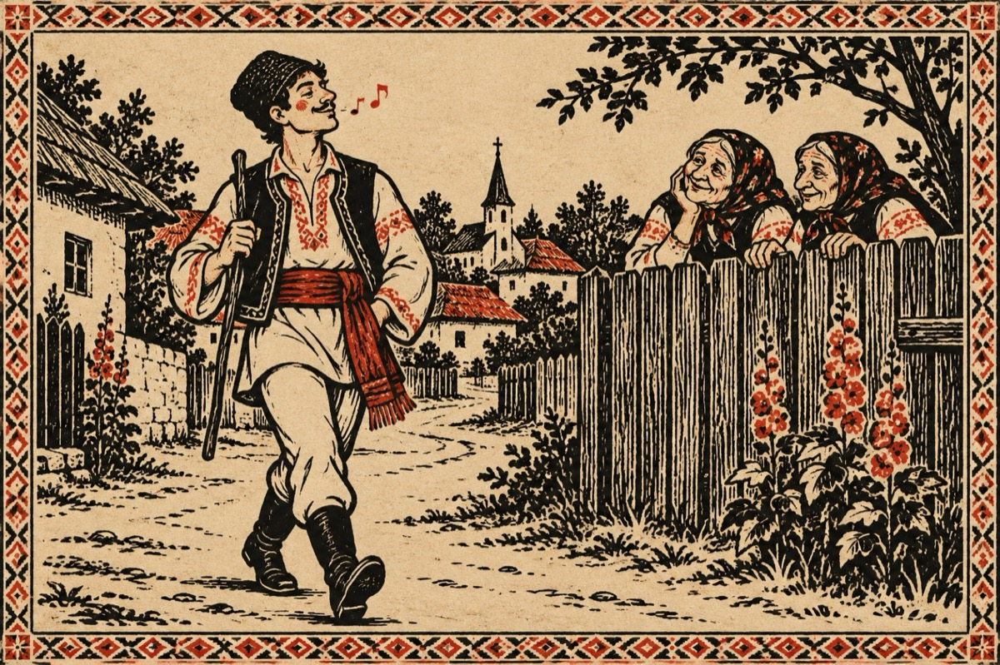

Văsălie
Tânăr și fain fecior
După el fecele mor.
Când mere la horă-n sat,
De tăce este catat.
Pă uliță tăt cântând
Sau din buze fluierând,
Babele tăce din sat
Să zăuită păstă gard!
Șâ vorbăsc în legea lor,
De-un așa mândru ficior.
Țifraș sâ așe voinic,
Ăsta-i bun de ibovnic!
Nu la mine tu, bătu-lar,
Ci la fata lu’ Crâșmar.
Că-aia îmblă ca năroada,
Șâ-o băgat în el iscoada!...
Ptiu ce gânduri te-apucă,
Zâsă baba lui Săvuică
Bată-ce ca să ce bată,
Parcă ești o apucată!
Tu gândiși la Văsălie,
Ăsta ar putea să-ți fie
Mă rog, poate jinerică,
Ce crez’ lui Mări îi strică!?
Tu muiere dă țâi gardu
Dute că-o viit bărbatu,
Punei lașca ca să mânce
Șâ făi patul să se culce!
Iar grija lui Văsălie,
Las-o-n sama lui Mărie.
Că-amândoi să potrivăsc,
Șâ tare fain să iubăsc!
Vasile Groza